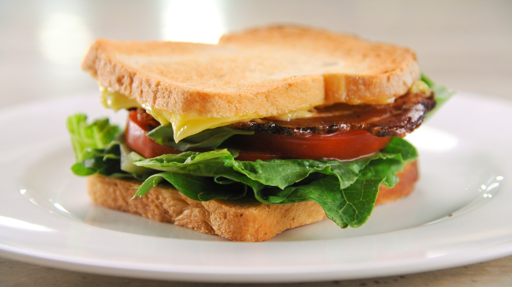

Time: 5 minutes
Cost: $9
Servings: 1
1. Spread one side of one slice of toast with butter.
2. Arrange lettuce on top, along with tomato and basil. Season with salt and pepper.
3. Top with bacon
4. Spread remaining slice of toast with mayonnaise; place mayonnaise side down to form a sandwich and cut on the diagonal. Serve immediately.
Source: http://www.marthastewart.com/951399/perfect-blt-sandwich